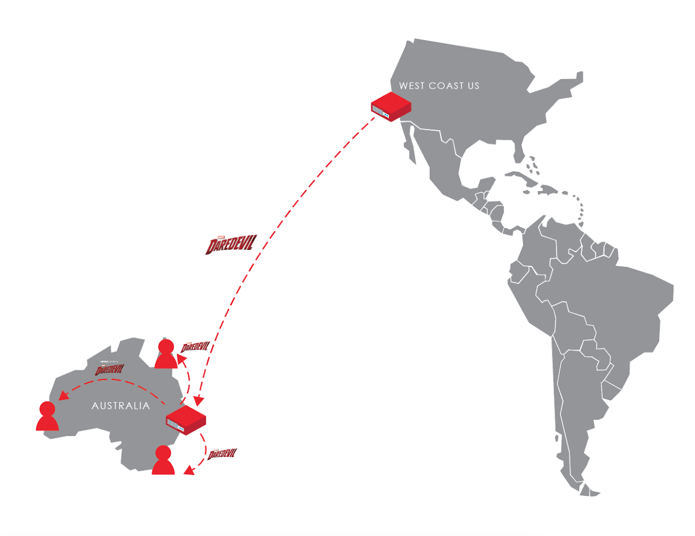

The End Device
Your MacBook or iPad or SmartTV. Data packets are decoded at the wireless interface. Software within your browser is rendering these into video and audio.
 11:30PM-12:30AM
11:30PM-12:30AM
The Wireless Hop
The local wireless network, centered by a wireless access point. Here, video data streaming in from the network is encoded into 802.11 frames and then pumped throughout your local environment as radio waves.
 11:30PM-12:30AM
11:30PM-12:30AM
The Open Connect Appliance (OCA)
The physical content server that was installed by Netflix at your local ISP's data center. It contains multiple hard drives which together hold between 100 and 200TB of Netflix content. This is the literal machine that is serving your video stream to you in real-time. Every day, it also downloads ~7.5Tb of new video data from Netflix during off-peak hours. Your ISP agrees to pay for the electricity it uses because it spares them of the Netflix thru-traffic they would be handling otherwise.
2AM-12:00PM, 11:30PM-12:30AMYour Internet Service Provider (ISP)
The company to whom you pay a monthly bill, and who operates and maintains the network in your local area. Netflix has partnered with your ISP by installing OCAs in their regional data centers. One OCA somewhere in your ISP's network received the video you've chosen to stream within a content shipment from Netflix's Transcoding Repository. This OCA then replicated the files in this shipment onto every other OCA in your ISP's network, including the one streaming video to your device.
 Feb 26
Feb 26
The Internet Backbone
The vast network of fiber and coaxial cabling that connects ISPs together. Your stream is not currently migrating across these cables. However, the source data for your stream was shipped across these cables to an OCA in your ISP's network during an off-peak time to avoid competing with other backbone traffic (generally 2AM to noon, your local time).
 2:00AM - 12:00PM (earlier in the day)
2:00AM - 12:00PM (earlier in the day)
The Netflix Transcoding Repository
A centralized Netflix operations center somewhere in North America. Here, all of Netflix's content is encoded as video files and routed to certain global regions before being deployed across Internet backbone links. This is the origin of all physical video files before they are pre-positioned around the world.
 2AM-12:00PM